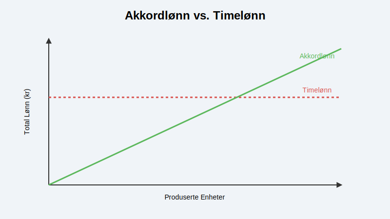
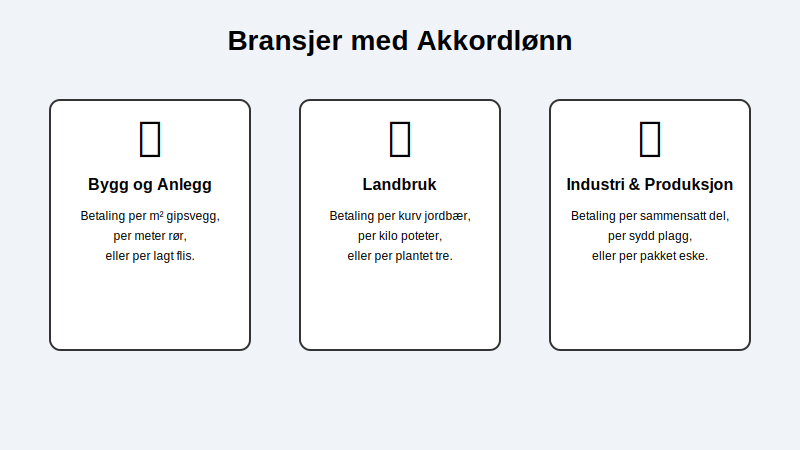

Akkordlønn er en form for produksjonslønn hvor betalingen avhenger direkte av mengden arbeid som utføres, i stedet for antall timer man jobber. Man får betalt per enhet som produseres eller per oppgave som fullføres. Dette kalles også å jobbe på akkord.
Selve ordet “akkord” refererer til avtalen som ligger til grunn for arbeidet, hvor en fast pris per enhet er bestemt på forhånd. Denne lønnsformen er ment å motivere til høyere produktivitet, ettersom den som jobber raskt og effektivt har mulighet til å tjene mer enn ved tradisjonell timelønn.
Akkordlønn vs. Andre Lønnsformer
Den grunnleggende forskjellen mellom akkordlønn og andre lønnsformer ligger i hva som måles. Timelønn kompenserer for medgått tid, fastlønn gir en fast månedlig utbetaling, mens akkordlønn kompenserer for oppnådd resultat. Dette ligner på provisjon, men akkordlønn baseres på produksjonsvolum mens provisjon baseres på salgsverdi.

- Fastlønn: Gir den mest forutsigbare inntekten med fast månedlig eller årlig beløp, uavhengig av timer eller produksjon. Baserer seg på grunnlønn og eventuelle faste tillegg.
- Timelønn: Gir en forutsigbar og stabil inntekt basert på en fast timepris, uavhengig av produksjonstempo.
- Akkordlønn: Gir en variabel inntekt som er direkte knyttet til egen innsats. Høyere produksjon gir høyere lønn. Dette er en form for produksjonslønn.
I mange tilfeller benyttes en hybridmodell, ofte kalt kombinert akkord eller akkord med garantilønn. Her har den ansatte en garantert minstelønn (timelønn), med et tillegg for produksjon over et visst nivå. Dette gir en økonomisk trygghet samtidig som det insentiverer til økt innsats.
Hvordan fastsettes akkordsatser?
En akkordavtale (eller akkordtariff) er en detaljert overenskomst som fastsetter prisen per enhet. For å komme frem til en rettferdig pris, er det vanlig å gjennomføre arbeidsstudier eller tidsstudier. Her analyseres og måles arbeidsoperasjonene for å finne ut hvor lang tid en gjennomsnittlig faglært arbeider bruker på å produsere én enhet. Denne normtiden danner grunnlaget for akkordsatsen, som skal gjøre det mulig å oppnå en fornuftig lønn ved normal arbeidsinnsats.
Bransjer som bruker akkordlønn
Akkordlønn var historisk sett svært utbredt i industrien, men er i dag mest vanlig i bransjer hvor det er enkelt å måle og kvantifisere arbeidsresultater.

- Bygg og anlegg: Betaling per installert gipsplate, per malte kvadratmeter eller per lagt meter med rør.
- Landbruk: Lønn for innhøsting baseres ofte på antall kurver med bær eller kilo med grønnsaker som plukkes.
- Industri og produksjon: I for eksempel tekstilindustrien kan lønnen være basert på antall sydde plagg. Innen logistikk kan det være betaling per pakket ordre.
Fordeler og ulemper med akkordlønn
| Fordeler | Ulemper |
|---|---|
| For den ansatte: Potensial for høyere lønn. | For den ansatte: Uforutsigbar inntekt, kan presse til å ta snarveier. |
| For arbeidsgiver: Økt produktivitet. | For arbeidsgiver: Kan gå på bekostning av kvalitet og sikkerhet (HMS). |
| Gir direkte belønning for effektivt arbeid. | Kan skape et konkurransepreget og stressende arbeidsmiljø. |
Akkordlønn i regnskapet
For en bedrift er korrekt håndtering av lønn en sentral del av regnskapet. Akkordlønn, som all annen lønn, må dokumenteres nøye. Grunnlaget for lønnsutbetalingen (f.eks. antall produserte enheter) må være sporbart og registreres i den ansattes ansattreskontro.
Det månedlige lønnslipp for akkordlønn må vise detaljert informasjon om produserte enheter, enhetspris og eventuelle tillegg eller garantilønn. Lønnen skal innrapporteres via a-meldingen, og det skal beregnes forskuddstrekk og arbeidsgiveravgift på vanlig måte.
Relaterte ord
- Produksjonslønn
- Prestasjonslønn
- Provisjonslønn
- Fastlønn
- Timelønn
- Akkordavtale
- Lønn